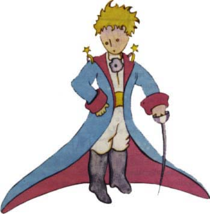
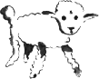
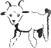
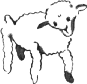
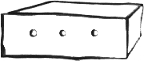

Mìl jsem pitnou vodu sotva na týden.
První veèer jsem tedy usnul v písku, na tisíc mil daleko od jakékoliv obydlené konèiny. Byl jsem opu¹tìnìj¹í ne¾ troseèník na voru uprostøed oceánu. Dovedete si proto pøedstavit, jaké bylo mé pøekvapení, kdy¾ mì na úsvitì probudil zvlá¹tní hlásek:
"Prosím pìknì ... nakresli mi beránka..."
"Co¾e?"
"Nakresli mi beránka..."
Vyskoèil jsem, jako by do mne hrom uhodil. Dobøe jsem si protøel oèi. Pozornì jsem se podíval a spatøil jsem prazvlá¹tního èlovíèka, který si mì vá¾nì prohlí¾el.

Toto je jeho nejlep¹í portrét, jaký se mi podaøilo pozdìji nakreslit.
Má kresba ov¹em není zdaleka tak pùvabná jako model. Ale za to já nemohu. Dospìlí mì odradili od malíøské kariéry, kdy¾ mi bylo ¹est let, a proto jsem se nenauèil kreslit nic jiného ne¾ zavøené a otevøené hrozný¹e. Udivenì jsem se díval na ten zjev. Pova¾te jen, ¾e jsem byl na tisíc mil od jakéhokoliv obydleného kraje. A mùj èlovíèek nevypadal, jako by zabloudil ani jako by byl na smrt unavený nebo vyhladovìlý, polomrtvý ¾ízní nebo na smrt vylekán. Vùbec nevypadal jako dítì ztracené v pou¹ti, na tisíc mil daleko od nìjakého obydleného kraje. Kdy¾ jsem koneènì byl schopen promluvit, øekl jsem mu:
"Ale ... co tu dìlá¹?"
A tu mi docela ti¹e, jako nìco nesmírnì vá¾ného, opakoval:
"Prosím pìknì ... nakresli mi beránka..."
Kdy¾ stojíme pøed pøíli¹ velkou záhadou, neodvá¾íme se neuposlechnout. Aèkoli se mi to zdálo zde - na tisíce mil ode v¹ech obydlených míst a v nebezpeèí smrti nesmyslné, vytáhl jsem z kapsy list papíru plnící pero. Ale tu jsem si vzpomnìl, ¾e jsem studoval pøedev¹ím zemìpis, dìjepis, poèty a mluvnici, a øekl jsem èlovíèkov (trochu mrzutì), ¾e neumím kreslit. Odpovìdìl mi:
"To nevadí. Nakresli mi beránka."
Ponìvad¾ jsem nikdy nekreslil beránka, nakreslil jsem mu jednu z tìch dvou kreseb, které jsem umìl. Obrázek zavøeného hrozný¹e. A u¾asl jsem, kdy¾ jsem sly¹el, jak mi ten èlovíèek povídá:
"Ale ne, já nechci slona v hrozný¹i. Hrozný¹ je moc nebezpeèný a slon zabere hodnì místa. U mne doma je v¹echno malinké. Potøebuji beránka. Nakresli mi beránka."
Tak jsem tedy kreslil.

Díval se pozornì a øekl:
"Ne! Tenhle je u¾ moc nemocný. Udìlej mi jiného."
Nakreslil jsem tento obrázek:

Mùj pøítel se mile, shovívavì usmál:
"Ale podívej se ... to není beránek, to je beran. Má rohy..."
Tak jsem kresbu znovu pøedìlal.

On ji v¹ak zase odmítl jako ty pøedcházející:
"Ten je moc starý. Já chci takového, aby dlouho ¾il."
A tu, proto¾e jsem ztratil trpìlivost a proto¾e jsem spìchal, abych se co nejdøív pustil do rozebírání motoru, naèmáral jsem tuhle kresbu:

A prohlásil jsem:
"To je bedýnka. Beránek, kterého chce¹, je uvnitø."
Ale byl jsem velice pøekvapen, kdy¾ se oblièej malého soudce rozzáøil.
"Právì tak jsem to chtìl. Myslí¹, ¾e ten beránek bude potøebovat hodnì trávy?"
"Proè?"
"Proto¾e u mne doma je v¹echno malinké..."
"Jistì to postaèí. Dal jsem ti docela malého beránka."
Sklonil se nad kresbu.
"No, není tak moc malý ... Jé, podívej se, on usnul..."
A tak jsem se seznámil s malým princem.